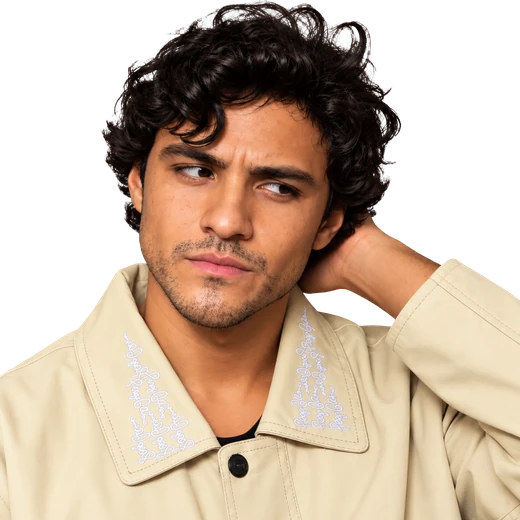

Theo
Theo é o livreiro da Bayside Books. Vende livros que dão bônus permanentes e organiza o clube do livro às quintas.
Rotina
Todos os dias
| Hora | Lugar |
|---|---|
| 6h | Fora do centro |
| 8h | Bayside Books |
| 21h | Fora do centro |
Presentes
No aniversário (9 de Verão), o presente vale mais: amado ×5, gostou ×3 e neutro ×2.
| Reação | Itens |
|---|---|
| Ama +80 pontos | |
| Gosta +45 pontos | |
| Neutro +20 pontos | Todo o resto (coletáveis e itens comuns) |
| Não gosta −20 pontos |
Eventos de coração
| Corações | Evento | Onde e quando | O que ganha |
|---|---|---|---|
| ♥ 2 | Conversa | Na próxima conversa | — |
| ♥ 4 | Theo: o clube do livro | Bayside Books, das 14h às 20h | Clube do livro do Theo: todo sábado um livro separado para você. |
Falas
“Bem-vinda à Bayside Books. Livros com bônus permanentes. Eu juro que não é golpe.”
Logo que se conhecem
“A Lucy Williams senta naquela poltrona todo fim de tarde. Já reservei pra ela, na verdade.”
Com amizade
“Você virou cliente da casa. Isso aqui é quase um clube secreto.”
Bem próximas
Mensagens no celular
Com 2 corações, ele manda mensagens de vez em quando (app Mensagens, tecla T). Responder dá amizade e carisma.
Ver as 6 mensagens e as respostas
Chegou uma edição antiga de poesia que tem a sua cara. Guardei atrás do balcão.
- Passo aí hoje. Não vende pra ninguém! → Ninguém vai encostar. Coloquei uma placa: 'reservado para a CEO'.
- Qual poeta? → Uma coletânea de 1920, com dedicatória a lápis. Os melhores livros têm história.
- Você sempre acerta meu gosto. → É meu trabalho. E um prazer. Mais prazer que trabalho.
Um cliente perguntou se a gente vende livros sobre 'como ser CEO'. Mandei ele te procurar.
- Diz pra ele dormir mais que eu. → Vou anotar na contracapa. Dica número um.
- Eu escreveria um, mas não tenho tempo. → Esse seria o título perfeito: 'Não tenho tempo'.
- Indica um romance para ele. → Boa ideia. Todo CEO precisa de uma boa história de amor.
Chuva lá fora, chá aqui dentro e um sofá livre na seção de mistério. Só dizendo.
- Guarda o sofá. Estou indo. → Já coloquei a chaleira no fogo. Camomila ou preto?
- Que convite perfeito. → A chuva ajuda. Eu só faço o chá.
- Qual mistério você recomenda? → Um clássico, com mordomo inocente. Essa é a graça.
Chegou uma caixa de livros usados e um deles tem anotações à mão nas margens. Comprei para mim. Desculpa.
- Anotações de quem? → Não sei. Mas a pessoa odiava o capítulo 7. Concordo.
- Livro anotado é o melhor tipo. → Exato. É ler com alguém do lado.
- Me empresta depois? → Empresto. Mas devolve com as suas anotações também.
Um menino entrou na loja e perguntou se tinha livro sobre dragões que gostam de matemática. Achei dois.
- Você é um mágico, Theo. → Sou um livreiro. É parecido, só que com poeira.
- Quero ler os dois. → Separo para você. Os dragões são ótimos professores.
- Essa cidade é incrível. → As crianças daqui são. Os adultos às vezes.
Choveu e a livraria encheu. Ninguém comprou nada, mas todo mundo leu muito. Dia perfeito.
- O que você leu? → Três capítulos de um romance e a receita de um bolo.
- Vou passar aí amanhã. → Vou deixar a poltrona boa livre. A da janela.
- Livraria com chuva é a melhor coisa. → E com chá. A chaleira não parou o dia todo.
Retratos

| Luthor Corp | |
|---|---|
| CatCo | |
| Moradores | |
| Conti Moretti | |
| De fora da cidade |